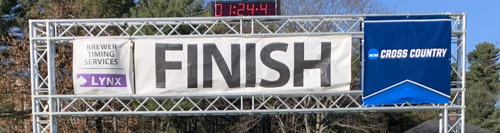
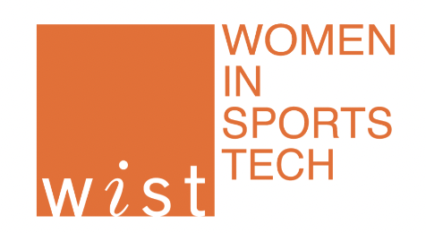

6km- The finish
My senior year I was the cross country conference champion and a cross country All-American.
I qualified for my first national championship on the track in the 3k steeplechase, an event that is
all about perseverance
and being the grittiest one in the race.
My favorite thing my senior year was realizing
I had successfully created a team where the girls under me who did not have to grow up idolizing a
mens team.
They were instead motivated by watching their own teammates.
In addition, it warmed my heart when freshmen boys started coming to me for training advice and
support,
seeing me as equal to their male captains.

You might think we’re at the end of the race now,
I got my All-American medal and my dream internship.
I graduated with my Bachelor’s in Computer Science and Economics.
However, there’s a reason this is the 1st Mary Kate McGranahan Cross Country Invitational and not
the last.
You finished this race… but we’re not done yet!

Beyond the finish
My senior year encouraged me to raise my standards for myself.
It showed me how much more there was for me to accomplish, in running and Computer Science.
I committed to run Division I at Virginia Tech while getting my Master’s in Computer Science.
I returned to Garmin for a second internship, but this time to work on the Global Partnerships and
Engineering Business Development team,
using my interest in business in and my technology experience to learn how a company I admire makes
product decisions.
I had another great summer of training with my fellow interns.

This fall, I finished my last collegiate cross country season in one of the most competitive
conferences in the country.
Now I have three more track seasons to see what I can do. I've started a new race and my next finish
line involves a career in sports technology.
A WiST fellowship would give me the opportunity to work with a new sports technology company to gain
more experience and a better picture of the field as a whole.
In addition, it would connect me to more female role models in sports technology.
I am extremely excited for my next race, and hope that you are too.
